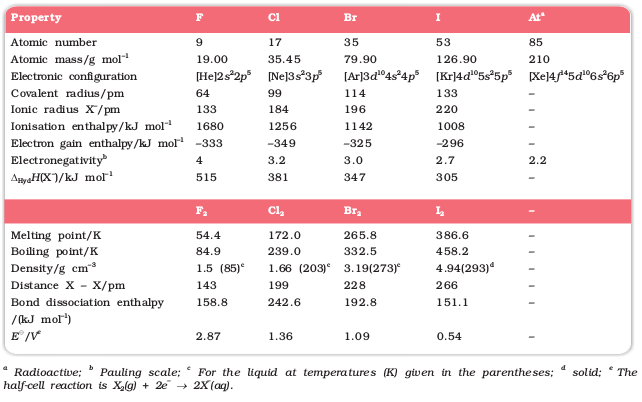
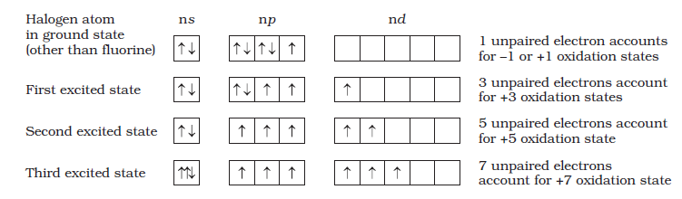
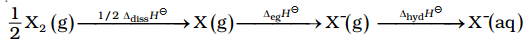
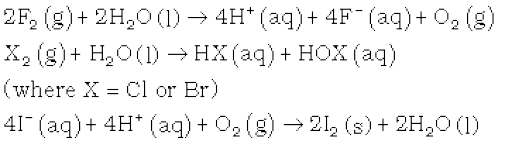
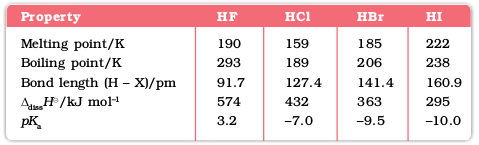
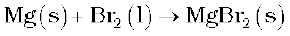

7.18 Group 17 Elements
Fluorine, chlorine, bromine, iodine and astatine are members of Group 17. These are collectively known as the halogens (Greek halo means salt and genes means born i.e., salt producers). The halogens are highly reactive non-metallic elements. Like Groups 1 and 2, the elements of Group 17 show great similarity amongst themselves. That much similarity is not found in the elements of other groups of the periodic table. Also, there is a regular gradation in their physical and chemical properties. Astatine is a radioactive element.
7.18.1 Occurrence
Fluorine and chlorine are fairly abundant while bromine and iodine less so. Fluorine is present mainly as insoluble fluorides (fluorspar CaF2, cryolite Na3AlF6 and fluoroapatite 3Ca3(PO4)2.CaF2) and small quantities are present in soil, river water plants and bones and teeth of animals. Sea water contains chlorides, bromides and iodides of sodium, potassium, magnesium and calcium, but is mainly sodium chloride solution (2.5% by mass). The deposits of dried up seas contain these compounds, e.g., sodium chloride and carnallite, KCl.MgCl2.6H2O. Certain forms of marine life contain iodine in their systems; various seaweeds, for example, contain upto 0.5% of iodine and Chile saltpetre contains upto 0.2% of sodium iodate.
The important atomic and physical properties of Group 17 elements along with their electronic configurations are given in Table 7.8.
Table 7.8: Atomic and Physical Properties of Halogens

The trends of some of the atomic, physical and chemical properties are discussed below.
7.18.2 Electronic Configuration
All these elements have seven electrons in their outermost shell (ns2np5) which is one electron short of the next noble gas.
7.18.3 Atomic and Ionic Radii
The halogens have the smallest atomic radii in their respective periods due to maximum effective nuclear charge. The atomic radius of fluorine like the other elements of second period is extremely small. Atomic and ionic radii increase from fluorine to iodine due to increasing number of quantum shells.
7.18.4 Ionisation Enthalpy
They have little tendency to lose electron. Thus they have very high ionisation enthalpy. Due to increase in atomic size, ionisation enthalpy decreases down the group.
7.18.5 Electron Gain Enthalpy
Halogens have maximum negative electron gain enthalpy in the corresponding periods. This is due to the fact that the atoms of these elements have only one electron less than stable noble gas configurations. Electron gain enthalpy of the elements of the group becomes less negative down the group. However, the negative electron gain enthalpy of fluorine is less than that of chlorine. It is due to small size of fluorine atom. As a result, there are strong interelectronic repulsions in the relatively small 2p orbitals of fluorine and thus, the incoming electron does not experience much attraction.
7.18.6 Electronegativity
They have very high electronegativity. The electronegativity decreases down the group. Fluorine is the most electronegative element in the periodic table.
Example 7.14
Halogens have maximum negative electron gain enthalpy in the respective periods of the periodic table. Why?
Solution
Halogens have the smallest size in their respective periods and therefore high effective nuclear charge. As a consequence, they readily accept one electron to acquire noble gas electronic configuration.
7.18.7 Physical Properties
Halogens display smooth variations in their physical properties. Fluorine and chlorine are gases, bromine is a liquid and iodine is a solid. Their melting and boiling points steadily increase with atomic number. All halogens are coloured. This is due to absorption of radiations in visible region which results in the excitation of outer electrons to higher energy level. By absorbing different quanta of radiation, they display different colours. For example, F2, has yellow, Cl2 , greenish yellow, Br2, red and I2, violet colour. Fluorine and chlorine react with water. Bromine and iodine are only sparingly soluble in water but are soluble in various organic solvents such as chloroform, carbon tetrachloride, carbon disulphide and hydrocarbons to give coloured solutions.
One curious anomaly we notice from Table 7.8 is the smaller enthalpy of dissociation of F2 compared to that of Cl2 whereas X-X bond dissociation enthalpies from chlorine onwards show the expected trend: Cl – Cl > Br – Br > I – I. A reason for this anomaly is the relatively large electron-electron repulsion among the lone pairs in F2 molecule where they are much closer to each other than in case of Cl2.
Example 7.15
Although electron gain enthalpy of fluorine is less negative as compared to chlorine, fluorine is a stronger oxidising agent than chlorine. Why?
Solution
It is due to
(i) low enthalpy of dissociation of F-F bond (Table 7.8).
(ii) high hydration enthalpy of F– (Table 7.8).
7.18.8 Chemical Properties
Oxidation states and trends in chemical reactivity
All the halogens exhibit –1 oxidation state. However, chlorine, bromine and iodine exhibit + 1, + 3, + 5 and + 7 oxidation states also as explained below:

The higher oxidation states of chlorine, bromine and iodine are realised mainly when the halogens are in combination with the small and highly electronegative fluorine and oxygen atoms. e.g., in interhalogens, oxides and oxoacids. The oxidation states of +4 and +6 occur in the oxides and oxoacids of chlorine and bromine. The fluorine atom has no d orbitals in its valence shell and therefore cannot expand its octet. Being the most electronegative, it exhibits only –1 oxidation state.
All the halogens are highly reactive. They react with metals and non-metals to form halides. The reactivity of the halogens decreases down the group.
The ready acceptance of an electron is the reason for the strong oxidising nature of halogens. F2 is the strongest oxidising halogen and it oxidises other halide ions in solution or even in the solid phase. In general, a halogen oxidises halide ions of higher atomic number.
F2 + 2X– → 2F– + X2 (X = Cl, Br or I)
Cl2 + 2X– → 2Cl– + X2 (X = Br or I)
Br2 + 2I– → 2Br– + I2
The decreasing oxidising ability of the halogens in aqueous solution down the group is evident from their standard electrode potentials (Table 7.8) which are dependent on the parameters indicated below:

The relative oxidising power of halogens can further be illustrated by their reactions with water. Fluorine oxidises water to oxygen whereas chlorine and bromine react with water to form corresponding hydrohalic and hypohalous acids. The reaction of iodine with water is non-spontaneous. In fact, I– can be oxidised by oxygen in acidic medium; just the reverse of the reaction observed with fluorine.

Anomalous behaviour of fluorine
Like other elements of p-block present in second period of the periodic table, fluorine is anomalous in many properties. For example, ionisation enthalpy, electronegativity, and electrode potentials are all higher for fluorine than expected from the trends set by other halogens. Also, ionic and covalent radii, m.p. and b.p., enthalpy of bond dissociation and electron gain enthalpy are quite lower than expected. The anomalous behaviour of fluorine is due to its small size, highest electronegativity, low F-F bond dissociation enthalpy, and non availability of d orbitals in valence shell.
Most of the reactions of fluorine are exothermic (due to the small and strong bond formed by it with other elements). It forms only one oxoacid while other halogens form a number of oxoacids. Hydrogen fluoride is a liquid (b.p. 293 K) due to strong hydrogen bonding. Other hydrogen halides are gases.
(i) Reactivity towards hydrogen: They all react with hydrogen to give hydrogen halides but affinity for hydrogen decreases from fluorine to iodine. Hydrogen halides dissolve in water to form hydrohalic acids. Some of the properties of hydrogen halides are given in Table 7.9. The acidic strength of these acids varies in the order: HF < HCl < HBr < HI. The stability of these halides decreases down the group due to decrease in bond (H–X) dissociation enthalpy in the order: H–F > H–Cl > H–Br > H–I.
Table 7.9: Properties of Hydrogen Halides

(ii) Reactivity towards oxygen: Halogens form many oxides with oxygen but most of them are unstable. Fluorine forms two oxides OF2 and O2F2. However, only OF2 is thermally stable at 298 K. These oxides are essentially oxygen fluorides because of the higher electronegativity of fluorine than oxygen. Both are strong fluorinating agents. O2F2 oxidises plutonium to PuF6 and the reaction is used in removing plutonium as PuF6 from spent nuclear fuel.
Chlorine, bromine and iodine form oxides in which the oxidation states of these halogens range from +1 to +7. A combination of kinetic and thermodynamic factors lead to the generally decreasing order of stability of oxides formed by halogens, I > Cl > Br. The higher oxides of halogens tend to be more stable than the lower ones.
Chlorine oxides, Cl2O, ClO2, Cl2O6 and Cl2O7 are highly reactive oxidising agents and tend to explode. ClO2 is used as a bleaching agent for paper pulp and textiles and in water treatment.
The bromine oxides, Br2O, BrO2 , BrO3 are the least stable halogen oxides (middle row anomally) and exist only at low temperatures. They are very powerful oxidising agents.
The iodine oxides, I2O4 , I2O5, I2O7 are insoluble solids and decompose on heating. I2O5 is a very good oxidising agent and is used in the estimation of carbon monoxide.
(iii) Reactivity towards metals: Halogens react with metals to form metal halides. For example, bromine reacts with magnesium to give magnesium bromide.

The ionic character of the halides decreases in the order MF > MCl > MBr > MI where M is a monovalent metal. If a metal exhibits more than one oxidation state, the halides in higher oxidation state will be more covalent than the one in lower oxidation state. For example, SnCl4, PbCl4, SbCl5 and UF6 are more covalent than SnCl2, PbCl2, SbCl3 and UF4 respectively.
(iv) Reactivity of halogens towards other halogens: Halogens combine amongst themselves to form a number of compounds known as interhalogens of the types XX′ , XX3′, XX5′ and XX7′ where X is a larger size halogen and X′ is smaller size halogen.
Example 7.16
Fluorine exhibits only –1 oxidation state whereas other halogens exhibit + 1, + 3, + 5 and + 7 oxidation states also. Explain.
Solution
Fluorine is the most electronegative element and cannot exhibit any positive oxidation state. Other halogens have d orbitals and therefore, can expand their octets and show + 1, + 3, + 5 and + 7 oxidation states also.